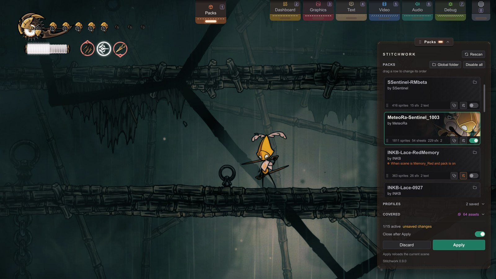

A3 The Pack Manager
Foundations · everyone.
Turn your packs on and off, put them in order, and save profiles.
It also shows which pack wins when two overlap.
Your pack already works? You can stop reading here and play.
Use this page when you need a particular control: pack order, profiles, or the conditions that turn a pack on and off.
A2 covers how to turn on your first pack.
Opening it
Press 1, or click the Packs pull tab at the top edge of the screen (Hotkeys lists the other defaults). You can also click the status badge (bottom left, not its eye). The manager opens as a docked panel titled Packs, at the right edge by default. It moves and rolls like every other panel (controls reference). The Pack Manager and the Dev Hub panels never show together: open one, and the other closes. Your staged changes stay.
Each pack is a card:
- Art: the pack's cover image, or a dark plate when it has none (Pack covers).
- Text: the name, then "by author · vversion", then the description.
- Source: an icon after the name tells where the pack came from. Point at it for the words. A folder means the global Packs folder; a package means a mod-manager install; a shirt means a Customizer skin.
- Status: one line. A pack with conditions shows them as a sentence in orange, for example "When scene is Bone_01". A dot before the sentence fills while the conditions hold. Without conditions, it can show "n covered by pack": a higher pack shows that many of this pack's assets in its place.
- Bar: along the bottom, the grip, the file counts, the Pack Doctor button (a stethoscope), the conditions button (sliders) and the switch.
The border is teal when the pack is on, and orange when it is on and has conditions.

Turning packs on and off
The switch at the right end of each card's bar turns the pack on or off. Changes are staged — flip as many as you like, then commit with Apply; Discard throws the staged changes away. In a game scene, the hint "Apply reloads the room. You can turn this off in Settings › Advanced." shows under the buttons while changes wait (with Reload the room on Apply on).
- Disable all, in the PACKS header, stages every pack off. Use it to find the one pack that causes a problem.
- Close after Apply is a switch above the buttons. When it is on, the manager closes after Apply, so you see the reload. It is off by default.
- Closing with changes: close the manager before you apply, and the buttons change to Apply & close, Discard & close and Keep & close. Keep & close keeps the staged changes for the next time you open it. A second close does the same.
While it applies
After Apply, a progress plate at the bottom of the screen counts the pack images as Stitchwork reads them, for example PNG 412/1818. The line under the bar names the part that it reads now. The game keeps running: the apply works in steps between frames, and the art that is on the screen loads first. At the end, Finishing… reloads the sounds, the text and the fonts, one part per frame. To trade apply speed against frame rate, see Troubleshooting.
With many packs, an Apply does only the work that changed:
- An atlas whose files and settings did not change stays as it is.
- A sound whose file did not change stays loaded, so a replaced music track does not start again.
- An Apply that changes no text skips the text reload.
If you go through a door during an apply, the apply continues from where it stopped. A second Apply while one runs is safe.
With Customizer, a change of skin is a loop: quit the game, launch it again, load the save, and walk back to the room. Here it is one Apply.
No runback.
Apply without the room reload
In a game, Apply also reloads the room when the packs are done: a fade, and Hornet enters the room again by the door she came through, else by the nearest door. To change packs without the reload, turn off Settings › Advanced › Reload the room on Apply (config ApplyReloadsScene under [Packs], on by default).
With it off, Apply changes the packs in place, as a pack condition does when it switches during play. There is no fade, and Hornet stays where she is. The limit: some game objects keep a copy of their sprite or sound from the moment they start. They show the new packs only in the next room.
Priority: who wins
When two packs target the same asset, the higher one in the list wins. Drag a card with the left mouse button to reorder it; the grip on its bar marks it as draggable. A right click during the drag puts the card back. Then Apply. Top = boss.
Covered
The COVERED fold under the list counts the assets that two packs, or a pack and your working folder, both replace: "none", or "n assets". Open it to list each one: the asset key, "shows winner", "over loser". Open on a row shows the losing pack's file, or its folder. A text row against your working folder has Resolve instead: it opens the Text tab and compares that pack's text with yours. An overlap is normal. Reorder only when the wrong pack wins.
Each card's "n covered by pack" line uses the staged order. So you see the result of a drag before you click Apply.
Conditions
The sliders button on a card's bar opens the pack's conditions in a drawer under the card — rules that make a pack switch on or off by game state. The same button closes the drawer; there is no Done button. Each condition reads as words, for example "Crest is Reaper", and a lamp shows if it holds now. Condition edits are staged too, so they wait for Apply. The full guide is Conditional Activation. A pack can also ship its own rule sets, parts of the pack that switch on by conditions. They show as a SETS section in the same drawer (a preview; see the same guide).
Profiles
A profile saves which packs are on, their conditions, and their order — "festive reskin," "all off (vanilla)," whatever you keep switching between. Cheaper than re-toggling by hand every time.
PROFILES is a fold under the list, closed by default. Its header says "none" or "n saved".
- Save: type a name after Save as:, then click Save. The profile keeps the list the panel shows, staged changes included.
- Load: click a profile's chip. This only stages the profile; nothing changes until Apply. A profile turns on only the packs that it names. A pack that it does not name, for example one that you installed after the save, is staged off at the end of the list. The log names those packs, and any pack of the profile that is not installed.
- Delete: click the small × after a chip, then click it again when it says "Click to delete".
Pack covers
A pack can show a cover image on its card. Put cover.png beside pack.json, in the pack's Stitchwork/ folder. Or name another image in the pack with a "cover" field in pack.json. That path must stay inside the pack; use / between folders. In a package that a mod manager installed, a cover.png beside the package's manifest.json works too. After you add or change a cover, press Rescan.
The best size is 1280 × 400 pixels. The card crops the image to fill it. A dark shade covers the left half, behind the text, and fades out toward the right. Put the important part of the image in the right third.
The rest of the panel
- Rescan, in the top row, reads every pack folder again. Use it after you add, remove or change a pack while the game runs. Your staged changes stay.
- Global folder, in the PACKS header, opens
<Game folder>/Packs/(or the folder set in Settings › Folders), and makes it when it is missing. With no packs installed, the list shows that folder's path. - When the panel is rolled up, its title shows "n/m active", or "unsaved" while changes wait.
- The footer shows the Stitchwork version.
- The interface language is in Settings › General: press
0, or click the gear tab at the right end of the pull tabs. Pick Follow the game, or a language. Some labels of the Pack Manager change only after you close and open the panel again.
The Pack Doctor
Every pack card has a Pack Doctor button: the stethoscope in its bar (the tooltip says Check this pack). It's a static health check that reads the pack's files (no game state needed, works from the main menu). It writes a report of each part of the pack that would fail with no error message, and opens the report. It finds:
- wrong folder tiers
- root folders with the wrong case, such as
sprites/forSprites/(these work on Windows, but fail on Linux and Steam Deck) - anchor-tag conflicts
- leftover
_WIPfiles - name typos, checked against your own dumps
- a missing
pack.json - an old
Recolour/folder to rename toRecolor/ - PNGs with light edges (below)
Reports land in doctor-reports/ in your working folder (by default <Game folder>/). The report is in the interface language; the rule names and the paths stay English. A Customizer skin gets one note instead of these checks. Creators: run it before publishing, every time.
Light sprite edges
Clip Studio Paint saves white under the transparent pixels of a PNG. You do not see these pixels, but the game blends them into the edge of the art. The result is white specks around the edges of your art. The Pack Doctor checks a sample of up to 48 PNGs in the pack's asset folders for this problem.
When the report finds PNGs with light edges, the Pack Manager offers to clean the files. Click Back up, then clean to start, or Cancel. The clean writes into the pack's own files, also in a pack that a mod manager installed. An update of that pack puts back the old files. Stitchwork first copies each PNG that it changes to Backups/ in your working folder. The clean checks every PNG in the pack's asset folders, and a message lists the cleaned files. A file that is open in another program stays as it is: close it and clean again.
Only the hidden pixels change, so the art looks the same. A cleaned PNG loses its extra data, such as the name of the program that saved it. Players do not need clean files: troubleshooting names the setting that hides the specks.
Your settings survive pack updates
Pack enabled/disabled state, conditions, and profiles are keyed to the pack's identity (its author/name from pack.json), not its folder path — so moving, renaming, or updating a pack to a new version folder keeps its settings.
Stitchwork keeps this state in BepInEx/config/Stitchwork/, so each mod-manager profile has its own pack order, switches and saved profiles. Your working folder and the Packs/ shelf stay shared by every profile.
Next
- Make a pack respond to game state → Conditional Activation
- Something's misbehaving → When Something Looks Wrong